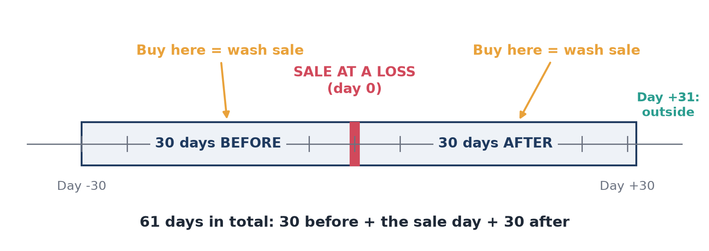
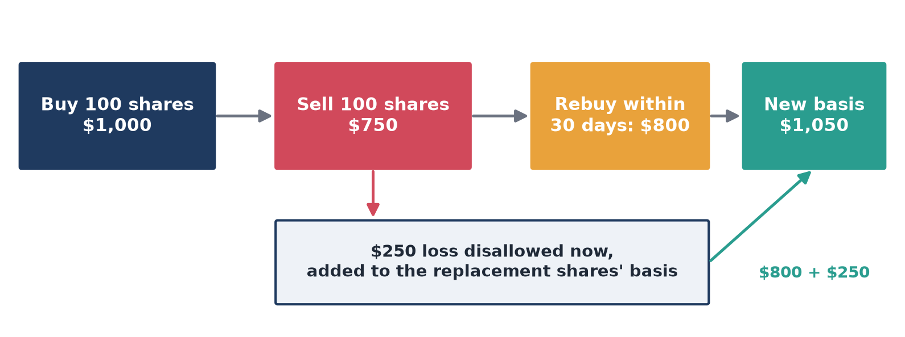
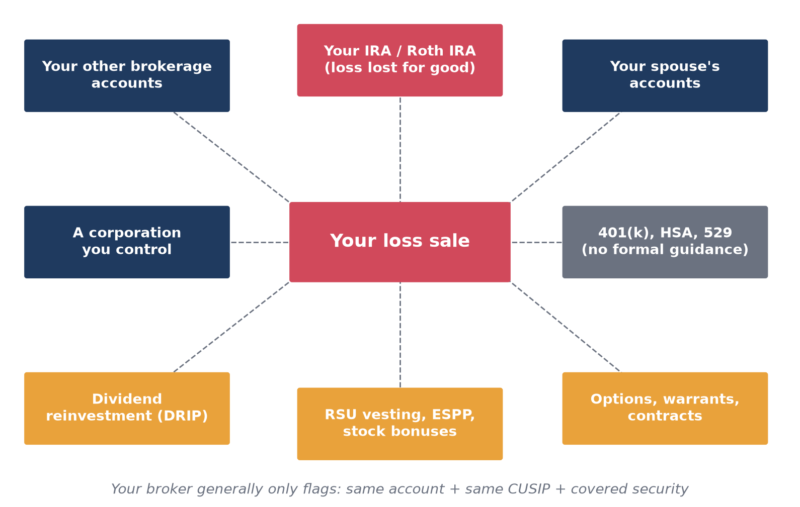
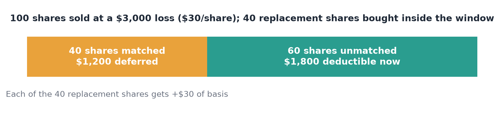
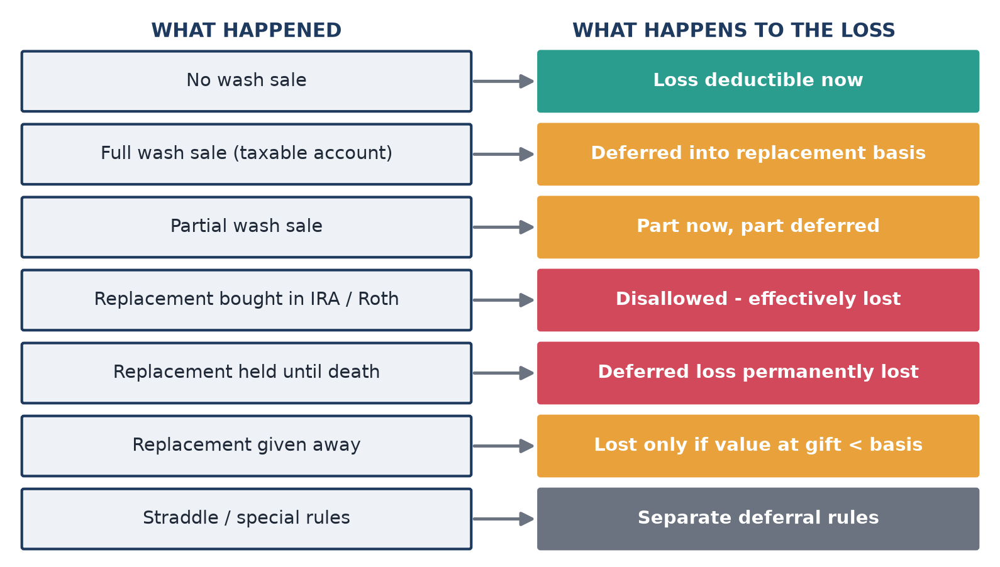
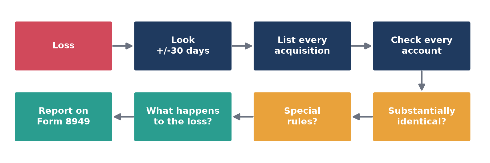

I recently sold some stock at a loss, and for a moment it felt like the whole market was against me. The silver lining, I thought, was the tax loss. Then I ran into the wash-sale rule.
I had always understood it as a simple rule: sell a stock at a loss, and don’t buy it back within 30 days.
Simple enough. Then I actually read the wash-sale section of IRS Publication 550, and the statute behind it, Internal Revenue Code §1091.
It turns out “don’t buy it back” is doing a lot of work. The rule can reach into your IRA, your spouse’s account, options and warrants, short sales, stock your employer gives you, and even situations where you never handed over any cash.
So I worked through the rule from the ground up, not as a tax lawyer, but as an investor trying to understand what the IRS means when it says “wash sale.” This is that tour, starting with the simple version and gradually getting weird.
What is a wash sale?
You buy 100 shares for $1,000 and sell them for $750, a $250 loss. Within 30 days, you buy 100 shares of the same stock for $800.
That is a wash sale. You can’t deduct the $250 loss now, because you acquired substantially identical stock inside the window.
The window is 61 days long:
- 30 days before the sale
- the day of the sale
- 30 days after the sale

Figure 1. The wash-sale window looks backward as well as forward.
Inside that window, a loss sale becomes a wash sale if you (IRC §1091; Publication 550):
- Buy substantially identical stock or securities;
- Acquire substantially identical stock or securities in a fully taxable trade;
- Enter into a contract or option to acquire substantially identical stock or securities; or
- Acquire substantially identical stock or securities for your IRA or Roth IRA (Rev. Rul. 2008-5).
If your spouse or a corporation you control acquires substantially identical stock, that can also create a wash sale.
That’s the basic rule. Everything else is about what counts as an acquisition, what counts as substantially identical, whose account counts, and what happens to the loss.
Why does this rule even exist?
Because people figured out how to create a tax loss without really giving up their investment.
Imagine you own a stock that has fallen from $100 to $70 a share. You sell at $70 and book a $30-per-share tax loss. Then you immediately buy it back at roughly $70. Economically, nothing changed. You still own the same investment.
Congress decided you shouldn’t get a deduction for that. The wash-sale provision first appeared in the Revenue Act of 1921. The Senate Finance Committee’s report (S. Rep. No. 67-275) said the change was meant to “prevent taxpayers from taking colorable losses in wash sales and other fictitious exchanges.” The 1921 rule covered substantially identical property acquired within 30 days before or after the sale, and it simply denied the loss. The basis adjustment that defers the loss came later. Later revenue acts broadened the rule, and today’s §1091 also reaches contracts and options to acquire substantially identical stock or securities.
So the 30-day window isn’t really the point. It’s the mechanism. The bigger idea is:
You generally can’t claim a tax loss while stepping right back into substantially the same investment.
And that’s why the rule has grown into the weird little monster it is today.
Where does the loss go?
Here’s the part that makes wash sales less scary. In an ordinary taxable account, the loss usually isn’t gone. It’s deferred.
Using the example above: you paid $1,000, sold for $750, and had a $250 loss. You bought replacement shares for $800. The disallowed $250 is added to the basis of the replacement shares:
$800 replacement cost + $250 disallowed loss = $1,050 new basis

Figure 2. A wash sale moves the loss into the replacement shares’ basis.
You don’t get the $250 deduction today. It rides along in the replacement shares and generally comes back when you sell them in a taxable transaction. Your holding period for the replacement shares also includes the time you held the old shares (IRC §1223(3)), which can help you reach long-term treatment sooner.
Deferred, unless…
“Deferred” assumes you eventually sell the replacement shares in a taxable account. Several common situations break that assumption, and the deferred loss can be permanently lost:
- The replacement was bought in your IRA or Roth IRA. If your IRA or Roth IRA acquires substantially identical stock inside the 61-day window, the loss is disallowed and no basis adjustment is allowed (Rev. Rul. 2008-5). The loss is simply gone.
- You hold the replacement shares until death. Your heirs generally take a basis equal to fair market value at death (IRC §1014). The extra basis, and the deferred loss inside it, disappears.
- You give the replacement shares away. The deferred loss can be lost, but only if the shares’ fair market value at the time of the gift is below your adjusted basis. In that case, the recipient’s basis for loss purposes is limited to that fair market value (IRC §1015). If the shares have recovered above your adjusted basis, the recipient takes your carryover basis, and the deferred loss rides along with it.
Why should I care? Your broker sees only part of the picture
You can trigger a wash sale without doing anything that feels unusual. Your broker generally reports a wash sale on Form 1099-B only when the security sold was a covered security, the replacement had the same CUSIP, and the purchase happened in the same account.
But the IRS is explicit: you can’t deduct a wash-sale loss just because it wasn’t reported on your 1099-B (or 1099-DA). The 1099-B shows what your broker was required to report. It doesn’t necessarily show every wash sale you had, especially when you trade across:
- Multiple brokerage accounts or brokers
- IRAs and Roth IRAs
- Your spouse’s accounts
- Employer stock programs
The tax rule follows the transaction, not the brokerage dashboard.

Figure 3. Acquisitions anywhere in this web can turn your loss sale into a wash sale.
Wait, the window goes backward too?
Yes. This is probably the easiest part of the rule to miss. “Within 30 days before or after” is right there in the statute.
Say you own 100 shares bought at $100. On December 1, you buy 50 more at $72. On December 15, you sell the original 100 at $70, a $3,000 loss.
You already bought 50 substantially identical shares in the 30 days before the sale. So the loss on 50 of the shares sold is disallowed: 50 × $30 = $1,500. The other $1,500 is deductible.
The disallowed $1,500 is added to the 50 shares bought on December 1. Their basis becomes $72 + $30 = $102 per share, and their holding period includes the time you held the shares you sold.
The window isn’t “sell, then wait 30 days.” It’s look 30 days backward and 30 days forward.
The year-end trap
The window doesn’t care about tax years. Sell at a loss on December 20, 2025, and buy back on January 5, 2026, and the loss is disallowed on your 2025 return. It is added to the basis of shares you bought in 2026. Plenty of investors harvest losses in December and get caught by this.
Wait, I don’t have to rebuy the whole position?
Right. A wash sale can be partial.
If you sell 100 shares at a $3,000 loss ($30 per share) and acquire only 40 substantially identical shares within the window, only the loss on 40 shares is disallowed. Under the regulations, replacement shares are matched against the shares sold in the order the replacements were acquired, starting with the earliest (Treas. Reg. §1.1091-1(c)).
- Loss on 40 shares deferred: 40 × $30 = $1,200
- Loss recognized now: $3,000 − $1,200 = $1,800
- Each of the 40 replacement shares gets $30 added to its basis

Figure 4. In a partial wash sale, only the matched shares’ loss is deferred.
This is why tracking individual lots matters.
Wait, what if I sold winners and losers on the same day?
Publication 550 addresses this directly. Suppose you own three blocks of the same stock: Block 1 has a loss and Blocks 2 and 3 have gains. You sell all three on the same day, then buy back some of the stock within the window.
You can’t net the losing block against the gaining blocks to sidestep the rule. The gains on Blocks 2 and 3 stay fully taxable, while the loss on Block 1 is subject to the wash-sale rule.
Block 1 has a $2,000 loss, and Blocks 2 and 3 each have a $1,000 gain. You sell all three, then buy the same number of shares back two weeks later. You report $2,000 of gains now, and the $2,000 loss is deferred into the new shares. You don’t get to report zero.
Selling everything at once doesn’t merge your lots into one big transaction. The lots still matter.
Wait, other people’s accounts count?
Yes. This is where things start getting weird.
Your spouse
If you sell stock at a loss and your spouse acquires substantially identical stock within the window, Publication 550 says you have a wash sale. “I sold it in my account and my spouse bought it in theirs” is not a workaround.
A corporation you control
Same idea. If a corporation you control acquires substantially identical stock, the wash-sale rule can apply.
Your IRA or Roth IRA
This one deserves special attention. Under Rev. Rul. 2008-5, buying substantially identical stock in your IRA or Roth IRA within the window triggers a wash sale. And unlike the normal case, no basis adjustment is allowed in the IRA. The loss doesn’t get deferred. It’s effectively gone for good.
Selling at a loss in a taxable account and rebuying the same holding in your IRA or Roth IRA is one of the most expensive wash-sale mistakes you can make.
Your 401(k), HSA, or 529
There is no formal IRS guidance on purchases inside employer plans, HSAs, or 529 plans. The reasoning of Rev. Rul. 2008-5 could plausibly extend to them. Watch automatic contributions that buy the same fund or stock you just sold at a loss. If the amount matters, ask a professional.
Stock your employer gives you
This one sounds ridiculous until you see the IRS example. Publication 550 describes an employee who receives company stock as a bonus, sells some at a loss, and then receives another substantially identical stock bonus within 30 days. The loss is disallowed.
In practice, the situations people run into most are:
- RSU vesting. Shares delivered at vesting are an acquisition. Selling older company shares at a loss within 30 days of a vest can create a wash sale.
- ESPP purchases. Each periodic purchase is an acquisition.
- Stock bonuses and other stock compensation.
The lesson isn’t that every vesting event is automatically a wash sale. It’s that an acquisition doesn’t have to mean opening your brokerage app and clicking Buy.
Wait, what about dividend reinvestment?
Easy to miss. If you’re enrolled in a dividend reinvestment plan (DRIP), each reinvested dividend is a purchase. If it lands within 30 days of a loss sale, it usually causes a small partial wash sale, limited to the shares the dividend bought.
If you’re harvesting a loss on purpose, consider turning off reinvestment on that holding beforehand. And don’t just look at your manual buy orders. Check:
- Dividend reinvestments
- Automatic investment plans
- Employer awards
- Options
- Stock received through other transactions
The boring automatic stuff is exactly what sneaks up on you.
Wait, “fully taxable trade” sounds important
It is, but it’s less mysterious than it sounds. The rule isn’t limited to purchases with cash. The statute also covers acquiring substantially identical property in an exchange where the entire gain or loss is recognized.
The takeaway: think “acquired,” not just “bought.”
Wait, options and futures count?
Now we get into the fun stuff. The wash-sale rule applies to losses from selling or trading contracts and options to acquire or sell stock or securities (IRC §1091(a)). And entering into an option or contract to acquire substantially identical stock counts as an acquisition. So “I sold the stock, I just need to watch my stock purchases” isn’t enough.
- Buying call options on the stock within the window generally counts as entering into an option to acquire it.
- Selling (writing) puts is less settled. But if the put is assigned inside the window, you’ve bought the shares, and that purchase counts.
Warrants
Publication 550 gives an example where direction matters:
- Sell common stock at a loss and buy warrants on the same company’s common stock at the same time: the wash-sale rule applies, because a warrant is an option to acquire.
- Sell warrants at a loss and buy the same company’s common stock: the rule applies only if the warrants and the stock are substantially identical.
Securities futures
Losses from the sale, exchange, or termination of a securities futures contract to sell are treated much like losses from closing a short sale. And because a securities futures contract to acquire stock is a contract to acquire it, entering into one can itself be a trigger.
Commodity futures and foreign currency
Section 1091 applies only to stock or securities. Commodity futures and foreign currency generally aren’t stock or securities, so the wash-sale rule itself generally doesn’t apply to them. However, the straddle rules (below) can impose wash-sale-style loss deferral on them (Treas. Reg. §1.1092(b)-1T).
So don’t turn “options and futures count” into “every derivative is a wash sale.” The tax classification matters.
What counts as “substantially identical”?
This is where the judgment lives. There’s no IRS list of which securities are and aren’t substantially identical. Publication 550 tells you to consider all the facts and circumstances, and it offers these guideposts:
- Different companies: Stock or securities of one corporation are ordinarily not substantially identical to those of another. Exception: in a reorganization, the stock of the predecessor and successor corporations may be substantially identical.
- Bonds or preferred vs. common: A corporation’s bonds or preferred stock are ordinarily not substantially identical to its common stock.
- Convertible bonds or preferred: When they convert into the same company’s common stock, their relative values, price changes, and other circumstances can make them substantially identical to the common.
Publication 550’s example treats convertible preferred stock as substantially identical to the common when all of the following are true:
- It is convertible into the common stock;
- It has the same voting rights as the common;
- It is subject to the same dividend restrictions;
- It trades at prices that don’t vary significantly from the conversion ratio; and
- It is unrestricted as to convertibility.
The takeaway: “different ticker = definitely safe” is not what the IRS says.
What about ETFs and mutual funds?
I’m not going to give you false certainty here. The IRS has never published a table saying “Fund A can always be swapped for Fund B.” The test is still whether the two are substantially identical based on the facts and circumstances, and a different ticker doesn’t settle the question.
Many practitioners use a rough spectrum, which reflects common practice rather than IRS guidance:
- Higher risk: two funds from different issuers that track the same index, with nearly identical holdings and performance.
- Lower risk: two funds that track different indexes, for example a large-cap index fund swapped for a total-market fund, or one index provider for another with different methodology and holdings.
If a lot of money is at stake, document your reasoning and talk to a tax professional.
What about digital assets?
There’s a newer wrinkle. The 2025 Schedule D instructions say the wash-sale rules apply to digital assets that are also stock or securities for federal tax purposes, such as tokenized securities.
That does not mean all cryptocurrency is subject to the wash-sale rule. Section 1091 covers stock and securities, so a digital asset’s tax classification matters. As of October 2026, bills to extend the wash-sale rule to all digital assets have been introduced in Congress, but none has been enacted. Check the current law for the year you’re filing before relying on this.
What about money-market funds?
Here there is a specific administrative exception. Rev. Proc. 2014-45 originally said the IRS wouldn’t treat redemptions of shares in floating-NAV money-market funds as wash sales. After the SEC’s 2023 money-market reforms, Rev. Proc. 2023-35 superseded it and broadened the relief: for redemptions after October 2, 2023, the IRS won’t treat a redemption of shares in any money-market fund as part of a wash sale. The 2025 Schedule D instructions still describe only the floating-NAV case, but the revenue procedure is the controlling guidance.
It’s a good reminder not to reduce the subject to “loss + buy something similar = wash sale.” There are specific exceptions.
What about short sales?
They’re covered too, but the trigger runs in reverse. With a normal sale, the trigger is buying. A short-sale loss becomes a wash sale if you sell, or enter into another short sale of, substantially identical stock within 30 days before or after the date the short sale closes.
Timing depends on when the short sale is considered complete. If, on the date you enter the short sale, you already own identical stock (or have a contract or option to acquire it) and you later deliver that stock to close, the short sale is treated as complete on the date you entered it. Otherwise, it isn’t complete until you deliver the property to close it.
Short-sale date isn’t necessarily the closing date, and that distinction moves your 61-day window. Separately, shorting stock you already own can be a constructive sale under IRC §1259, which is another rule entirely.
Wait, what’s a straddle?
This is where wash sales and options become a completely different rabbit hole.
A straddle is generally a set of offsetting positions in personal property. Publication 550’s example is buying a call option and a put option on the same number of shares, with the same exercise price and expiration. The two positions move in opposite directions, so one reduces your risk of loss on the other.
Straddles have their own loss-deferral rules (IRC §1092). If you close one leg at a loss while the offsetting leg has an unrecognized gain, the loss can be deferred. Regulations also apply wash-sale-like rules to straddle positions.
| Rule | The question it asks |
|---|---|
| Wash sale (§1091) | Did you sell at a loss and acquire substantially identical stock or securities within 30 days? |
| Straddle (§1092) | Did you realize a loss while holding an offsetting position that reduces your risk? |
They can overlap, but they ask different questions. Straddles also bring in Section 1256 contracts, mixed straddles, hedging and elections, qualified covered calls, and Form 6781. At that point you’re well beyond the five-minute version of wash sales.
Wait, then what’s a “dealer”? And what about traders?
The wash-sale rule has a built-in exception for a dealer in stock or securities, for losses from transactions in the ordinary course of that dealer’s business (IRC §1091(a)). “Dealer” is a technical term. It doesn’t mean “someone who trades a lot.”
To be treated as a trader in securities, Publication 550 says you must:
- Seek to profit from daily market movements rather than dividends, interest, or long-term appreciation;
- Have substantial trading activity; and
- Carry on that activity with continuity and regularity.
Anyone who doesn’t meet those tests is an investor, even if they call themselves a day trader.
| Status | What it means | Wash-sale rule? |
|---|---|---|
| Investor | Buys securities as investments | Applies |
| Trader (no election) | Qualifying business of trading for own account | Applies |
| Trader with §475(f) election | Trader who elected mark-to-market accounting | Generally does not apply to trading-business securities |
| Dealer | Business of buying from and selling to customers | Does not apply to ordinary-course dealer transactions |
The mark-to-market election
A qualifying trader who makes a timely §475(f) mark-to-market election treats trading securities as sold at fair market value at year-end. Gains and losses become ordinary, and the statute turns off the wash-sale rule for losses recognized under the mark-to-market regime (IRC §475(d)(1), applied to electing traders by §475(f)(1)(D)).
This isn’t a loophole for active retail investors. You must first qualify as a trader, the election has strict deadlines (generally by the original due date of the prior year’s return), it’s hard to revoke, and it gives up capital-gain treatment. Being a very active trader doesn’t make you a dealer, and it doesn’t switch off the wash-sale rule without a valid election.
Is there a special case with a different window?
Yes. For residual interests in a REMIC, Publication 550 says the wash-sale rule generally applies if you acquire another residual interest, or a comparable interest in a taxable mortgage pool, from 6 months before to 6 months after the sale (IRC §860F(d)).
“30 days” is the normal rule, not a law of nature.
Wash sale vs. related-party loss: don’t mix them up
Selling stock at a loss directly to a related party, such as a parent, child, sibling, or a corporation you control, is governed by a different rule, IRC §267. That rule can disallow the loss even if no one buys anything back, and no time window is involved.
Selling or transferring stock to your spouse falls under yet another rule, IRC §1041. No gain or loss is recognized, and your spouse generally takes over your basis. These are separate traps with different math, so don’t assume the 30-day window is the only thing to check.
So what actually happens to my loss?
Every time, don’t stop at “Is this a wash sale?” Ask: “If it is, what happens to my loss?”

Figure 5. The question isn’t just “is it a wash sale?” but “what happens to the loss?”
| Situation | Result |
|---|---|
| No wash sale | Loss generally recognized now |
| Full wash sale, taxable account | Loss disallowed now; added to replacement basis; holding period carries over |
| Partial wash sale | Matched portion deferred into replacement basis; the rest recognized now |
| Replacement bought in IRA / Roth IRA | Loss disallowed with no basis adjustment, effectively lost |
| Replacement shares held until death or given away | Death: deferred loss permanently lost. Gift: lost only if fair market value at the gift is below your adjusted basis |
| Straddle | Separate loss-deferral rules may apply |
| Trader with §475(f) election, dealer, MMF redemption | Exceptions may apply |
That’s a much better mental model than “wash sale = loss disappears.”
How do I report it?
On Form 8949. When you have a wash sale, enter code W in column (f) and the disallowed loss as a positive number in column (g). If your 1099-B already shows a wash-sale amount (box 1g), carry it over. If your broker didn’t catch it, for example because the replacement was bought in another account, you have to make the adjustment yourself.
Again, your 1099-B isn’t the final word. You can’t deduct a wash-sale loss just because it wasn’t reported to you.
The checklist
When you realize a loss:
- Look 30 days back and 30 days forward. Not just the next 30 days.
- Check whether the window crosses December 31. A January buy can disallow a December loss.
- List everything you acquired in that window. Look beyond manual stock purchases to other brokerage accounts, your IRA and Roth IRA, 401(k) and HSA, your spouse’s accounts, corporations you control, options (including assigned puts), contracts, warrants, short sales, RSU vesting and ESPP purchases, dividend reinvestments, and other acquisitions.
- Ask whether any of it could be substantially identical. Different tickers don’t automatically mean different securities.
- Count the shares. If you sold 100 and acquired 40, the whole loss isn’t necessarily disallowed.
- Match the lots. Replacement shares are matched in the order they were acquired.
- Ask what happens to the loss. Is it recognized, partly deferred, added to replacement basis, lost in an IRA, or subject to straddle rules?
- Track the deferred loss. Keep the adjusted basis with the replacement shares, and understand what a gift or an inherited position does to it.
- Report it correctly. Form 8949, code W, with the adjustment in column (g).
The takeaway
Don’t walk away with “just wait 30 days.” Walk away with this:

Figure 6. The wash-sale workflow, start to finish.
The basic rule takes five minutes to learn. The rest is the part that costs people money.
Sources
Statute, regulations, and IRS guidance
- 26 U.S.C. §1091, Loss from wash sales of stock or securities
- Treas. Reg. §1.1091-1, Losses from wash sales of stock or securities
- Treas. Reg. §1.1091-2, Basis of stock or securities acquired in wash sales
- 26 U.S.C. §1092, Straddles
- 26 U.S.C. §475, Mark-to-market accounting (including (d)(1) and (f))
- Rev. Rul. 2008-5, Internal Revenue Bulletin 2008-3: IRA and Roth IRA purchases
- Rev. Proc. 2023-35: money-market fund redemptions (supersedes Rev. Proc. 2014-45)
- IRS Publication 550 (2025), Investment Income and Expenses
- IRS Instructions for Schedule D (Form 1040), 2025
- IRS Instructions for Form 8949
- IRS Instructions for Form 1099-B
- Also referenced: 26 U.S.C. §§267, 860F(d), 1014, 1015, 1041, 1223(3), 1259; Treas. Reg. §1.1092(b)-1T.
Legislative history
- Revenue Act of 1921, ch. 136, §214(a)(5), 42 Stat. 227: original federal wash-sale provision.
- S. Rep. No. 67-275 (1921), Senate Finance Committee report on the Revenue Act of 1921.
Additional reading
Related
- What Really Changes When You Trade Options
- What's Really at Stake When You Sell an Option
- I Bought Life360 Near the Top. I Was Ready for the Fall.